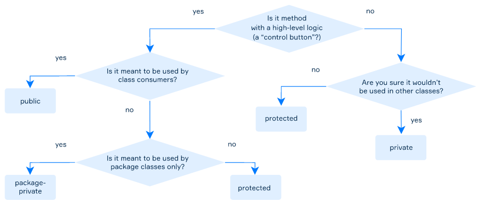

You've probably seen the following piece of code:
public static void main(String[] args) {
// some code goes here
}Why is the word "public" even there? As you can probably guess, it means that the
main(...) method is available to everyone. The word public here is an access modifier.
An access modifier is a special keyword that specifies who is allowed to use your code or a special part of it. It can be placed in front of any field, method or the entire class.
So, you already know at least
one of the access modifiers! The others are: package-private, protected, and
private. Why do we need them? Let's find out.
There are two main reasons to take access under control: clarity and safety of code.
Code clarity. Imagine your code is a complicated engine of a washing machine. There are some available functions – for example, choosing a washing program or starting a washing process.
What can we do to help the user quickly figure out how to wash their clothes? We can cover the engine with the body and add some buttons for choosing a washing mode and starting the process. The user has no need to know what is going on inside the machine’s body; the buttons to get the result are more than enough.
That’s how access control helps in code – you can “hide” the engine from the user by restricting access and simply providing them with the public “buttons”.
Code safety. Now imagine you have developed a rather useful library that is used by other developers. One day some Jane Doe wants to use your code’s functionality in her project, but the problem is that she needs to change one variable in one of your classes. If it is public, nothing can stop her from doing that in her code before using method A from the library.
What can happen if the variable is used somewhere in method B? The B method would probably start to act unpredictably. So, protecting important parts of your code is a guarantee that it will be used as an unmodifiable part and its behavior will be the exact one you have developed for it.
In fact, when you manage the access in your code, you simply divide objects of your program into two main groups: top-level items and low-level items. Fields and methods that are explicitly used outside the class are called top-level fields and methods. If fields and methods are used inside the class, they are known as low-level ones. This low-level and top-level logic is also applicable to classes.
Usually, using low-level items helps to unload top-level classes, methods or fields in order to structure and decompose the code. If these items are not explicitly used, it will be efficient to restrict access to them.
Now let’s see how we can set restrictions to different parts of the code. A top-level class (not an inner one, not a nested one) can have one of two following modifiers:
Here is a class inside the package org.aumanet.java.packages.theory.p1. with default package-private
access:
package org.aumanet.java.packages.theory.p1;
class PackagePrivateClass{
}This class can be used only by other classes from the same package. It's not even visible for classes from any other package, including:
org.aumanet
org.aumanet.java.packages.theory
default packageNote the first two examples – if the class is package-private in package a.b,
it is still unavailable from package a.c and package a itself.
Here is a public class inside the package org.aumanet.java.packages.theory.p2
package org.aumanet.java.packages.theory.p2;
public class PublicClass {
}This class has no access restrictions, it is visible to all classes and can be used everywhere, including:
org.aumanet
org.aumanet.java.packages.theory
org.aumanet.java.packages.theory.p1
default packageThe common way of using top-level class modifiers is:
Remember: everything that’s not meant to be used/changed by classes from other packages should not be public.
A class member (a field or a method, e.g. class constructor) has more options to choose from:
private, package-private, protected and public.
As you can see, there are two additional modifiers here. Let's consider member modifiers in more detail.
Fields are often declared private to control access to them from any other class. In some cases,
these fields are only used internally in the class and there is no way to change and even access them from any other
class. In other cases, it can be done via accessor methods (e.g. getters and setters).
Getter and setter methods are used to protect and hide your data when creating
classes. A getter method returns the value of a field, while a setter method sets or updates the value. We will
discuss the main features of getter and setter methods later in the topic related to these terms.
Private methods are used to hide the internal low-level logic implementation from the rest of the code and make public methods more brief and readable.
Here is the class Counter with the private field current. This field can be read-only with
the method getCurrent() , a getter method, and changed with the inc()method. The last one
is not exactly a setter method because it doesn't manually set a value to a
current variable, but just increments it.
public class Counter {
private long current = 0;
public long getCurrent() {
return current;
}
public long inc() {
inc(1L);
return current;
}
private void inc(long val) {
current += val;
}
}Sometimes, a private class constructor is required. This type of constructor can only be used inside the class, e.g. from another constructor, which can be public or private too, or from the class methods.
A package-private access modifier does not require any keyword. If a field, a method, or a constructor has this modifier, then it can be read or changed from any class inside the same package.
Let's
see an example. Here are two classes in the same package: Salary and Promotion.
The
class Salary has a package-private field and a constructor. An instance of the Salary
class can be created inside a class of Promotion, and the field can also be accessed by
Promotion and its members because they belong to the same package.
public class Salary {
long income;
Salary(long income) {
this.income = income;
}
}
public class Promotion {
Salary salary;
Promotion(Salary salary) {
this.salary = salary;
}
public void promote() {
salary.income += 1500;
}
}Disclaimer: you will learn to use these two modifiers later!
If a class member has the protected access modifier, it can be accessed from classes inside the same package and all subclasses of this class (including the ones in other packages). For now, it is important to remember that the protected option is less restricting than package-private as it allows some classes from other packages access to the code member.
A public access modifier means that there is no restriction on using a field, method, or class. It's often used for constructors, and methods representing the class API but not commonly used with fields.
Here are common ways to understand which access modifier to choose. It is not the ultimate algorithm, because the inheritance and subclass topics have not been covered yet, but it can help you understand the main use cases of the modifiers.
So, let's review the names of access modifiers (from most to least limiting):
private — available only inside a class;
package-private (also known as default, implicit) — available for all classes in the same package;
protected — available for classes in the same package and for subclasses (will be covered later);
public — available for all classes everywhere.
The table above illustrates the level of access provided by the access modifiers: the class always has access to its members, and so on. Note that by a subclass here, we mean only a subclass of this class used in another package. We will learn about inheritance and subclasses later.
Remember that only public or default (no keywords) modifiers may be used when declaring classes. All four of them can be applied to class members: fields, methods, etc.
In this topic, you learned about access modifiers that allow you to determine who will be able to use the code. Using them makes your code safer and clearer. In conclusion, here is a piece of advice: use the most restrictive access level that makes sense for a particular member. Don't make all members public.